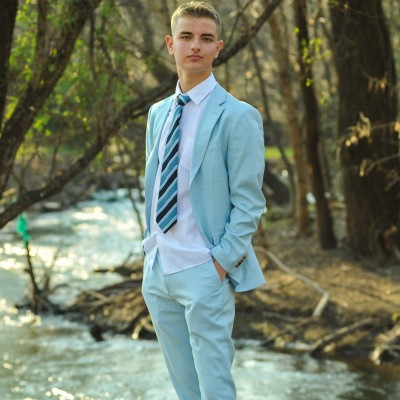

In-house production system
Contributing directly to a live codebase: fixing bugs, shipping day-to-day UI improvements, and building new feature templates as the system grows.
Portfolio / Orka Solar / NWU
I'm a junior developer. I work in a live React codebase at Orka Solar, build websites for clients, and make things on the side that I'm curious about. Scroll to fly through them, or if you'd rather see it all on one page.
01 · Home base

I'm a junior developer and a first-year Computer Science & Economics student at NWU. I started building websites for clients in 2023, and I've spent the years since learning the parts that don't show up in screenshots: hosting, SSL, search indexing and page speed.
Since July I've worked at Orka Solar, shipping interface work in a React codebase and helping with cable-routing designs. Outside of work I build things I'm curious about, like a trading research system that tests itself and a bot that makes short videos on its own.
I like problems where being careful pays off, and I like explaining what I've built in plain words.
Press the button for a signal from home.
02 · Orka Solar · Jul 2026 — now
I joined as a junior developer and work on two fronts: shipping UI in the company's React system, and doing the electrical design support the software exists to serve. Understanding both sides is the part I'm most glad to be learning.
Contributing directly to a live codebase: fixing bugs, shipping day-to-day UI improvements, and building new feature templates as the system grows.
Producing 3D layouts of cable routes to support system design and site planning, so runs are worked out before anyone is on site.
Working through cable derating so planned cable runs are rated correctly for their installation conditions, not just on paper.
Processing and uploading site load-profile data into the company's ERP, keeping the numbers clean for the people who depend on them.
03 · Independent project
A model is only “deployable” if it clears all three on data it never saw.
04 · Independent project
05 · Freelance · 2023 — now
Three years of freelance work taught me the unglamorous half of the job: domains, hosting, SSL, indexing, speed, and keeping a client's site working after launch.
Modern, mobile-first responsive site. Built the SEO structure, improved search visibility and tuned load times across devices.
Corporate site built and deployed with full hosting and SSL setup, plus sitemap submission, Search Console integration and crawlability fixes.
Online shops with structured product categories and filtering, with layouts and checkout flow customised for usability and conversion.
06 · Toolbox
07 · Path
Orka Solar
Self-employed
North-West University, first year
The two engineering projects above were built on my own time, outside coursework and client work.
HS Ferdinand Postma · matric in Maths, Physics & Life Sciences
Captained the school team for three consecutive years, plus four years of drama. Strategy under pressure, and being comfortable in front of people.
08 · Contact
Hiring for a junior, front-end or full-stack role, or have a site that needs building? I'll get back to you promptly.
rolandoosthuizen09@gmail.com Download CV (PDF)